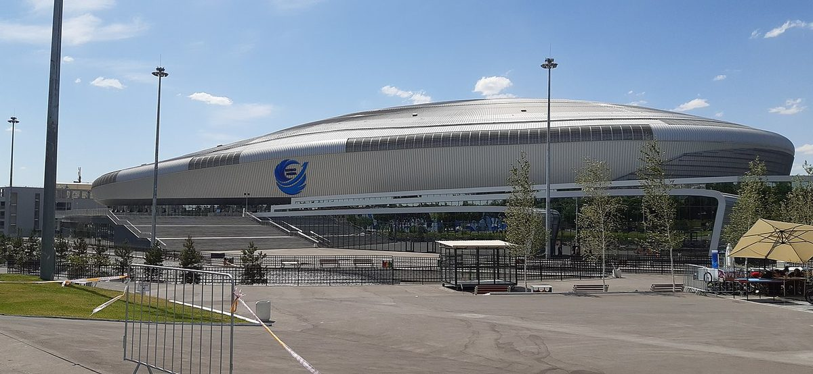
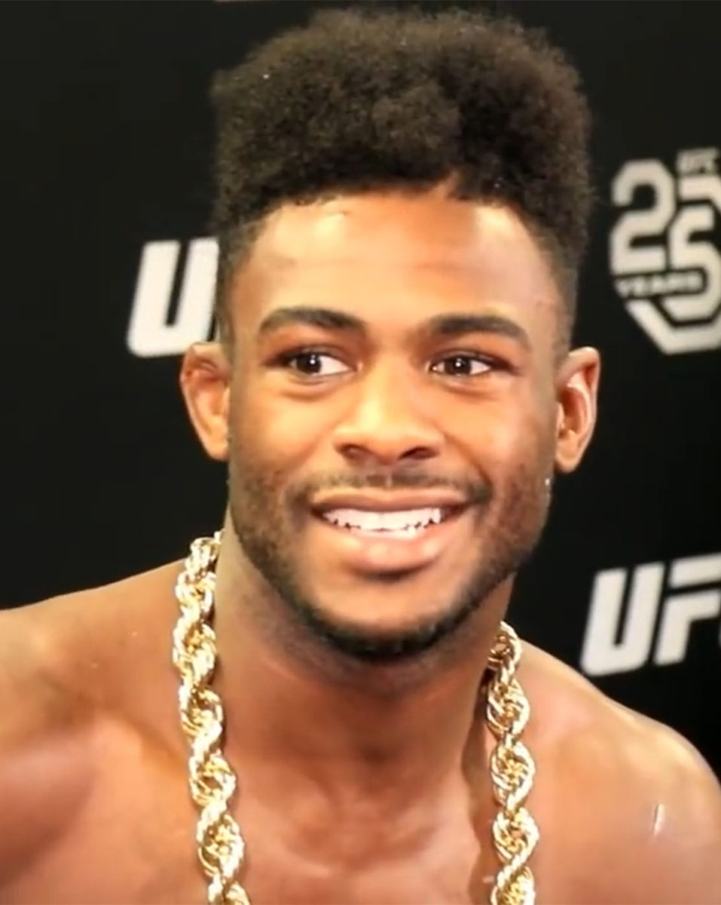

Mak
MMak — основатель и редактор Bang Sport Daily. Живёт в Пномпене (Камбоджа), много лет следит за мировым спортом и проверяет каждый материал перед публикацией.

Тянь Бинъи назначен главным тренером сборной Китая по бадминтону на цикл Лос-Анджелес-2028
63-летний экс-чемпион мира встал у руля национальной команды, а двукратный олимпийский чемпион Чжан Нань вошел в тренерский штаб.

Камила Валиева не выступит на чемпионате России в Челябинске из-за ограничений по здоровью
20-летняя фигуристка не вошла в предварительный состав участников: врачи ограничили ее тренировочные нагрузки.

Боян Ходак возглавил сборную Малайзии в рамках реорганизации штаба
55-летний хорватский специалист возвращается в малайзийский футбол, а Тан Ченг Хоэ переходит на должность директора сборной.

От корта на кондитерской фабрике до величия в бадминтоне: путь Ратчанок Интанон
Чемпионка мира 2013 года преодолела бедность, хронические травмы и смерть матери, оставшись главным символом бадминтона Юго-Восточной Азии.

Сборная Китая U-17 набрала первое за 21 год очко на ЧМ, сыграв вничью с Марокко — 2:2
Форвард Чжао Сунъюань оформил дубль в Дохе, но гол на 99-й минуте лишил команду Сатоси Укисимы победы.

Казахстан назвал состав из 11 боксеров на финал Кубка мира в Ташкенте
Карина Ибрагимова возглавит команду из шести мужчин и пяти женщин на престижном турнире в Узбекистане.

Федерация бокса России принята в полноправные члены World Boxing на конгрессе в Панаме
Делегаты четвертого ежегодного конгресса World Boxing большинством голосов предоставили России право голоса в преддверии Олимпиады-2028 в Лос-Анджелесе.

Мирра Андреева заработала $10,65 млн за 2026 год и вошла в топ-5 теннисистов планеты по призовым
19-летняя чемпионка «Ролан Гаррос» уступила по доходам на корте только первой ракетке мира Елене Рыбакиной из Казахстана, сообщает Sportico.

Чемпион по кун кхмер Ваннтхонг разгромил Рики на турнире K-1 Revenge II в Токио
Камбоджиец забрал все раунды на судейских записках в «Коракуэн Холле», продолжив громкую экспансию бойцов кун кхмер во втором полулегком весе K-1

«Победы любят тишину»: Трефилов осадил Шишкарёва за обещание медалей Олимпиады-2028
Триумфатор Рио-2016 призвал не горячиться с прогнозами, пока чиновники лишь пытаются выбить wild card в Лос-Анджелес.

Историческое первое очко на ЧМ U-17: Вьетнам вырвал ничью 3:3 у Новой Зеландии в безумном матче
Команда Криштиану Роланда трижды отыгрывалась по ходу встречи, пока Чыонг Нгуен Зуй Кханг не забил головой на 92-й минуте.

PFL утвердил кард из 14 боев турнира в Лионе: Лапилус и Макки оспорят титул в главном бою
Турнир 19 декабря на арене LDLC определит первого в истории лиги чемпиона в легчайшем весе и станет прощальным шоу перед ребрендингом 2027 года.

Карлос Алькарас обыграл Александра Зверева в Турине и впервые завоевал титул Итогового турнира ATP
23-летний испанец вошел в элитный клуб Агасси, Федерера и Джоковича, став четвертым теннисистом в истории с победами на всех четырех «Шлемах» и ATP Finals.

Мэнни Пакьяо: уличный боец, покоривший восемь весовых категорий
От ночевок на тротуарах Манилы до титулов на протяжении четырех десятилетий: феноменальный путь филиппинской легенды.

«Свайриенг» и «Пномпень Краун» идут на исторический дубль в Лиге чемпионов АФК 2
«Свайриенг» громит соперников 5:0 и лидирует в чемпионате, а лидирующий в Азии «Краун» везет блеклую домашнюю форму в решающий выезд в Кучинг

Сборные Бангладеш и Сингапура завершают подготовку к очным товарищеским матчам
И. о. тренера Эрик Маре руководит сбором в Дакке, а наставница «Львиц» отдала повязку Умайре Хамдан

От запасного в школьной команде до 9,83 секунды: путь и спортивная наука Су Бинтяня
В юности его не брали в секции из-за низкого роста, в 25 лет он рискнул сменить толчковую ногу в колодках — и стал первым уроженцем Азии, выбежавшим из 10 секунд и пробившимся в олимпийский финал.

Навахо Стирлинг нокаутировал Иржи Прохазку на UFC в Катаре, одержав главную победу в карьере
Непобежденный новозеландский полутяжеловес финишировал экс-чемпиона за две секунды до конца второго раунда и довел рекорд до 12-0.

Вань Вэйчон и Ти Кайвунь прервали 27-летнюю засуху Малайзии на турнире Hong Kong Open в парном разряде
Малайзийский дуэт в двух партиях переиграл индонезийцев Карнандо и Мартина, оформив второй титул Мирового тура BWF в сезоне-2026.

Ферстаппен выиграл Гран-при Лас-Вегаса, а авария Расселла разожгла скандал после финиша
Четырехкратный чемпион из «Ред Булл» вырвал победу у дуэта «Макларена», пока поздняя драма «Мерседеса» решала исход сумасшедшей дуэли длиною в 50 кругов.

Этот день в 2013-м: Магнус Карлсен сверг Вишванатана Ананда в Ченнаи
22-летний норвежский гроссмейстер оформил победу со счетом 6½:3½ в 10-й партии и впервые завоевал титул абсолютного чемпиона мира по шахматам.

Лорен Прайс переписала историю валлийского бокса, разгромив Михаэлу Котаскову в бою за звание абсолютной чемпионки
Олимпийская чемпионка забрала все раунды на карточках судей (трижды по 100-90) в Кардиффе и объединила все престижные пояса в полусреднем весе.

Кевин Вальехос требует титульный бой в случае победы над Стерлингом на UFC в Катаре
Аргентинский проспект уверен: победа над экс-чемпионом легчайшего веса в Дохе должна гарантировать ему поединок за пояс против Александра Волкановски.

Мальчик с Мадейры, переписавший историю футбола: жизнь и наследие Криштиану Роналду
От лачуги под жестяной крышей в Фуншале и операции на сердце в подростковом возрасте — до пяти кубков Лиги чемпионов и более 980 голов за карьеру

Вьетнам едва не сотворил сенсацию: яркий дебют на юношеском ЧМ и поражение 2:3 от Бельгии
Голы-шедевры Ле Ши Батя и Чу Нгок Нгуен Люка не уберегли азиатскую сборную от обидной осечки в матче с вице-чемпионами Европы в Дохе

Иржи Прохазка и Навахо Стерлинг сделали вес перед главным боем UFC в Катаре
Оба бойца полутяжелого веса показали на весах в Дохе ровно 93 кг перед субботней схваткой на ABHA Arena.

От гор Дагестана до рекорда 29-0: идеальный путь Хабиба Нурмагомедова в MMA
Под пожизненным наставничеством отца Абдулманапа дагестанский чемпион доминировал в UFC, после чего сдержал слово и ушел непобежденным на самом пике.

Хабиб Нурмагомедов отверг предложение Джейка Пола на 200 миллионов долларов за возвращение в ММА
Непобежденный экс-чемпион UFC в легком весе непреклонен: деньги не станут мотивацией для камбэка, точка в карьере поставлена окончательно.

«Свайриенг» громит «Порт» 4:1 и возвращается в борьбу за выход из группы клубного чемпионата АСЕАН
Голы Ратанака, Мартинса Жуниора, Тиаго Алвеса и Пепры принесли камбоджийцам убедительную победу в Пномпене

Этот день в 2022-м: Катар дал старт первому чемпионату мира на Ближнем Востоке
Дубль Эннера Валенсии в матче открытия положил начало 29-дневному зимнему турниру с рекордными 172 голами и третьим титулом Аргентины.